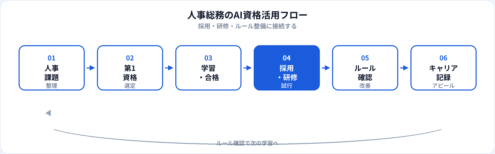

採用・労務・研修・総務など、人事・総務は「人」と「ルール」に関わる業務が中心です。生成AIは、求人票のたたき台、研修資料の骨子、社内規程・FAQの下書きを効率化できます。一方、個人情報・評価情報の取り扱いや採用バイアスは、コンプライアンス上の重要論点です。本記事では、人事・総務が取るべきAI資格を比較し、業務別の活用からキャリアまで2026年6月時点で整理します。事務職向け・社内資格制度ガイドも併せて参照してください。
人事・総務にAI資格が効く理由
人事・総務は、社員の信頼と法遵守の両方を守る必要があります。資格学習は、生成AIを下書きツールとして使いつつ、個人情報・最終判断・説明責任を人間が担う——という型を組織内で説明するための共通言語になります。
採用・研修の効率化
求人票、面接質問案、オンボーディング資料、eラーニング骨子の下書きを速く作り、候補者・社員との対話に時間を割ける。
社内ルール・ガイドライン整備
AI利用ルール、FAQ、研修スライドのたたき台を整備。生成AIパスポート第4章（個人情報・倫理）は人事が説明役になる場面と一致する。
全社AIリテラシー推進
資格取得支援制度の設計、研修カリキュラム、社内啓発の文面づくり。人事・総務は「全社の学び」を担うポジションにいる。
試験対策はこちら
業務タイプと資格の効き方
| 業務領域 | AI資格の主な役割 | 第1候補の目安 |
|---|---|---|
| 採用（リクルーティング） | 求人票・面接質問案、採用ブランディング文案 | 生成AIパスポート（個人情報・バイアス注意） |
| 人材開発・研修 | 研修骨子、ケーススタディ案、理解度チェック問題案 | 生成AIパスポート |
| 労務・給与連携 | 社内説明文、問合せFAQ、手続き案内の下書き | 生成AIパスポート（数値・個人情報は人が確定） |
| 総務・社内コミュニケーション | 社内通達、福利厚生案内、イベント告知文 | 生成AIパスポート |
| HR Tech・AIガバナンス | ツール選定、利用ルール、リスク説明 | 生成AIパスポート → G検定 |
業務別：生成AIの活用シーン
| 業務 | 生成AIの使い方（例） | 資格で学ぶ関連知識 |
|---|---|---|
| 求人票・採用ページ | 職種説明、必須スキル案、読みやすい構成の下書き | 差別表現の回避、最終確認は人間 |
| 面接・評価設計 | 構造化面接の質問案、評価観点の整理 | バイアス、選考判断は人間 |
| オンボーディング | 初日〜1週間のチェックリスト、歓迎メール文案 | 社内トーン・正確性の確認 |
| 研修・eラーニング | 章立て、ケース例、小テスト問題案 | 内容のファクトチェック |
| 社内AI利用ガイド | 禁止事項・推奨事項の文案、FAQ候補 | 個人情報保護、AI事業者ガイドライン |
| 従業員問合せ対応 | 労務・制度に関する回答案、エスカレーション判断補助 | 個別事情・法判断は専門家確認 |
法人向けの制度設計は社内AI資格取得制度、倫理・ガイドラインは学習ガイドを参照。
おすすめ資格の比較
| 資格 | 人事・総務との相性 | 学習時間目安 | 向いている担当 |
|---|---|---|---|
| 生成AIパスポート | ◎ 採用・研修・ルール整備に直結 | 20〜40時間 | 採用、研修、総務、社内啓発全般 |
| G検定 | ○ HR Tech選定・AIガバナンス | 80〜150時間 | 人事企画、DX推進、C&B連携 |
| ITパスポート | ○ 社内システム・情報セキュリティの土台 | 40〜80時間 | 総務、情シス連携が多い人事 |
| 社会保険労務士等（参考） | ○ 労務の専門性（AI資格とは別軸） | — | 労務担当（AIは文案・FAQに限定） |
第1候補と学習順
-
第1：生成AIパスポート
採用・研修・社内ルールのたたき台づくりと、個人情報・倫理の共通言語づくりにすぐ効く。合格後、社内AI利用FAQの更新1件から試す。
-
第2（任意）：G検定
HR Tech選定、AI採用ツールのリスク説明、全社AIリテラシー施策の企画をリードする場合。
-
第2〜3（任意）：ITパスポート
情シス・総務と連携し、社内システム・セキュリティポリシーを理解したい場合。
| あなたの担当 | 第1候補 |
|---|---|
| 採用・研修・社内コミュニケーション | 生成AIパスポート |
| 全社AI利用ルール・資格制度の設計 | 生成AIパスポート → G検定 |
| 労務・給与の問合せ対応が中心 | 生成AIパスポート（個別情報は入力しない） |
| HR Tech・人事システム選定 | 生成AIパスポート → G検定 → ITパスポート |
人事・総務の活用フロー

人事・総務では下書き→法務・労務確認→公開・運用→フィードバックの流れが重要です。AIは下書きまでを速くし、個人情報・法判断・最終承認は人間が担います。
合格後の実践（採用・研修・ルール）
求人票テンプレート
「職務概要・必須・歓迎・文化」のプロンプトを固定。差別表現・固有名称は人が最終チェック。
AIリテラシー研修骨子
全社向け1時間研修の章立て、演習案、理解度チェック。社内ルールと実ツール操作は別途用意。
社内AI利用FAQ
「入力してよい情報／ダメな情報／エスカレーション先」をFAQ化。生成AIパスポート学習内容と整合させる。
人事・総務の評価は公平性・コンプライアンス・社員体験です。効率化で空いた時間を、候補者・社員との対話とルールの精度向上に再投資することが重要です。
人事・総務現場の注意点
| やってよいこと | 避けるべきこと |
|---|---|
| 匿名化した求人・研修文案の下書き | 応募者・社員の個人情報・評価の入力 |
| 社内ルールに基づくFAQ候補の生成 | 労務判断をAIだけで確定 |
| 面接質問・評価観点のブレスト | AI採用スコアを説明なしで選考に使用 |
| 全社向け啓発資料の骨子づくり | 未公開の人事制度・報酬情報の入力 |
採用AIのバイアスや説明責任は、AIガバナンスの文脈でも問われます。ツール導入時は法務・情シスと連携してください。
キャリア・転職でのアピール
現職（人事・総務のまま）
「生成AIパスポート（年月）」と、社内AI利用ガイド策定「全社研修実施」「採用文案標準化」などをセットで記載。資格取得支援制度の設計・運用もアピール材料になります。
転職・キャリアチェンジ
- 人事企画・HR DX 制度設計 ＋ 生成AIパスポート ＋ G検定（任意）＋ HR Tech導入実績
- AIガバナンス・コンプライアンス 社内ルール整備 ＋ 生成AIパスポート ＋ 法務連携経験
- ラーニング＆デベロップメント 研修設計 ＋ 生成AIパスポート ＋ eラーニング刷新実績
- カスタマーサクセス（HR SaaS） 人事業務理解 ＋ 生成AIパスポート ＋ 顧客調整力
資格の一般的な活かし方はAI資格はキャリアにどう役立つ？、法人向け制度は学習ガイドを参照。
資格だけでは足りない点
人事・総務の評価は公平性・法遵守・対人スキルです。資格はリテラシーの証明になりますが、個別労働紛争・組織文化・経営判断は専門知識と経験が必要です。合格後は、リスクの低い文案・FAQから小さく試し、法務・労務の確認フローを必ず残してください。
よくある質問
人事・総務におすすめのAI資格はどれ？
採用・研修・ルール整備が主なら生成AIパスポート。HR Tech・ガバナンスをリードするならG検定も検討。
採用業務に生成AIを使ってよい？
求人票のたたき台など、個人を特定しない範囲での活用例があります。応募者情報の入力や選考判断の自動化は慎重に。
個人情報・人事評価情報をAIに入力してよい？
原則入力しない。社内規定とツール契約を確認。最終判断は人間が行う。
人事からAIガバナンス・DX担当に転職できる？
可能です。ルール整備・研修・調整経験は強み。資格に加え制度設計実績があると説得力が増します。